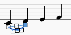
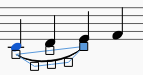
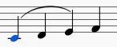
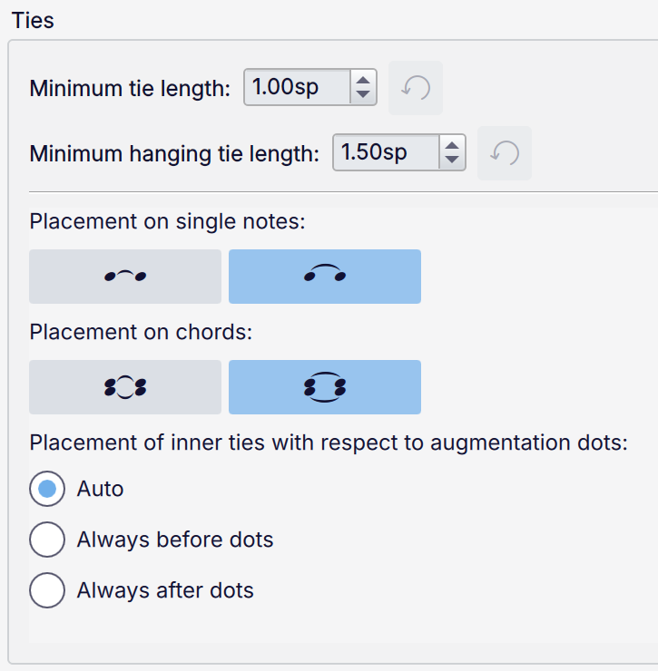
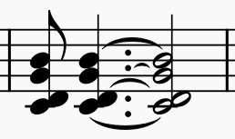

Slurs and ties
A slur is a curved line spanning any number of notes of different pitches and indicates legato articulation, though the exact interpretation depends on the instrument.
Though they look very similar, slurs should not be confused with ties, which connect notes of the same pitch and extend the duration of the first note to encompass the next note.
For information on how to input ties in note input mode, see Entering ties.
For information on how to input ties in normal mode, see Adding ties in normal mode.
Adding a slur
After selecting a note, a slur can be created using any of the following:
- A keyboard shortcut, S. This option is both convenient and fast.
- The menu option, Add -> Line -> Slur
- A slur from the Lines palette.
The exact method of applications depends on whether you are in note input or normal modes of operation. The keyboard shortcut method will be used as an example.
Adding slurs in normal mode
Method 1
- Select the note where you want the slur to start:

- Press S to add a slur extending to the next note:

- To extend the slur to the next note, hold Shift and press Right, repeating as required:

- As you extend the slur to cover more notes it may flip direction. To manually flip the direction, press X:

- Press Esc to exit edit mode:

Method 2
- Select the note where you want the slur to start;
- Choose one of the following options: * To add a single slur: Hold down Ctrl (Mac: Cmd) and select the last note that you want the slur to cover. * To add slurs to all voices: Hold down Shift and select the last note that you want the slurs to cover.
- Press S.
Adding slurs in note input mode
- Enter the first note in the slurred section
- Press S to create a slur starting on the note just entered
- Type in the remaining notes in the slurred section
- Press S again to end the slurred section on the last note entered.
Multi-voice and cross-staff slurs
Using method 2 (above) you can create a slur between notes in the same or different voices. Cross-staff slurs can be created in exactly the same way. e.g.

You can also adjust the start/end handles of an existing slur to move the start or end to a note of a different voice:
- Click on the start or end handle of the slur.;
- Press Shift+Up/Down to move the start or end between voices, and from staff to staff.
Changing the appearance of slurs and ties
To adjust the shape of a slur or tie, or the range of a slur, see Adjusting elements directly.
Slur and tie properties
Some properties of slurs and ties can be adjusted in the Properties panel:
- Style: solid, wide dashes, narrow dashes, or dotted
- Position: above or below the notes
Ties have one more setting:
- Tie placement: position the endpoints inside or outside of the noteheads
Slur and tie style
Default properties for all slurs and ties in the score can be adjusted in Format -> Style under Slurs & ties.

These options specify how slurs and ties are drawn. They are usually the same for slurs and ties, but they can be styled differently from each other.
- Line thickness at end and Line thickness at middle: slurs and ties are usually drawn as an arc which is thin at either end and thickens towards the middle. These settings determine the minimum and maximum thickness. Note that not every tie will reach this maximum thickness as some very short ties need to be made thinner for layout reasons. Also, these options are among those which may change automatically when changing a score's music font, if Style -> Automatically load style settings based on font is checked (which it is by default).
- Dotted line thickness: the thickness of dotted slurs and ties, which are usually drawn thinner
- Autoplace min. distance: the minimum distance between a slur and another item outside it
Partial slurs across repeats and breaks controls the slant of partial slurs (which cross a system break or a repeat or jump), and has two options:
- Follow contour of notes: the slant of each part of the slur will be determined by the notes that it spans
- Angle away from staff: the 'hanging' end of the slur will always be angled away from the staff, regardless of the contour of the notes.

These options apply to ties only.
- Minimum tie length: this enforces a minimum length for ties, useful for ties between short durations and chords
- Minimum hanging tie length: the minimum length for a hanging or partial tie, for example the two segments of a tie which crosses a system break, or a partial tie at a repeat or jump
- Placement on single notes and Placement on chords: the default positioning of the tie endpoints relative to the noteheads it connects, as illustrated by the two icons:
- 'inside': the tie starts just to the right of the first notehead and ends just to the right of the second notehead, vertically slightly above or below its center (according to its direction)
- 'outside': the tie starts just above or below the noteheads (according to its direction), horizontally just right of the center of the first notehead and just left of the center of the second notehead
- Placement of inner ties with respect to augmentation dots: this specifies where the left endpoint of inner ties should go when the note has any augmentation dots ('inner ties' are all ties when 'inside' placement is used, or ties to the inner notes of chords when 'outside' placement is used):
- Auto: start the tie before the dot if there is space; in chords, this may mean that the startpoints of the ties may not align, as the layout of each tie is considered separately
- Always before dots: start all ties before the dots; this may result in collisions with the dots, which should be avoided via manual adjustments
- Always after dots: start all ties after the dots, in alignment.
These examples use 'outside' placement:

Auto

Always before dots

Always after dots